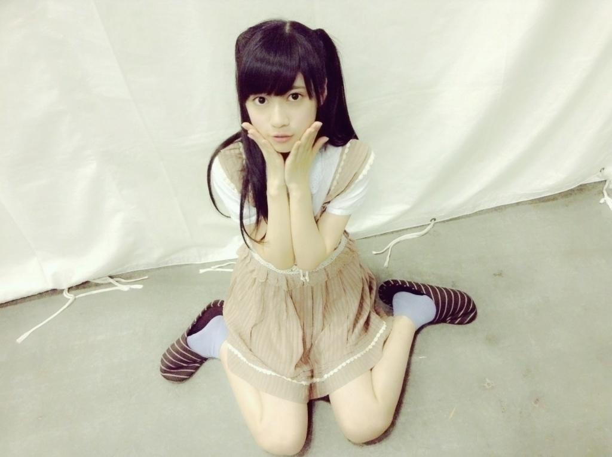
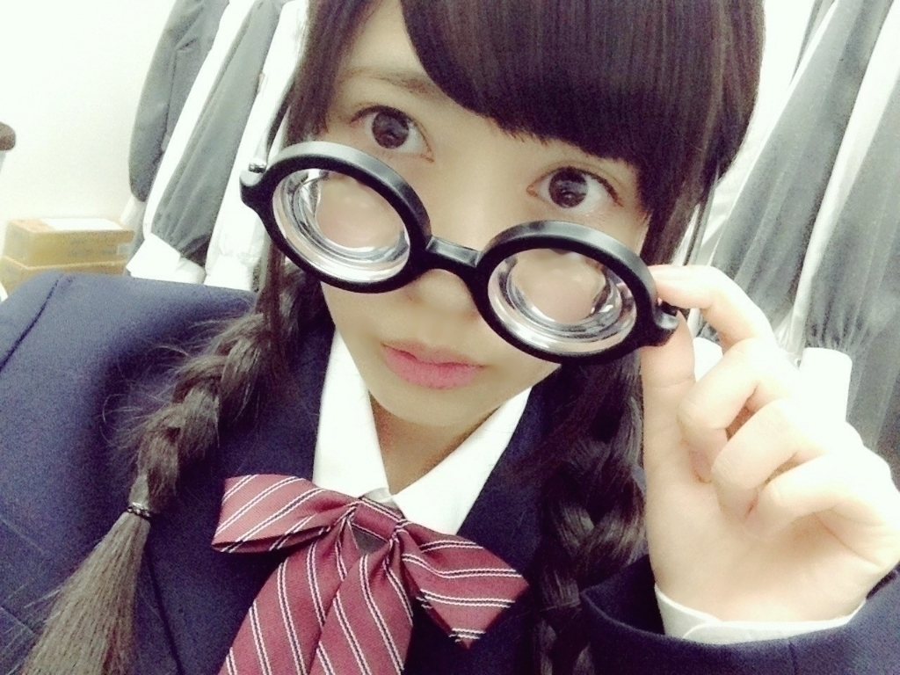
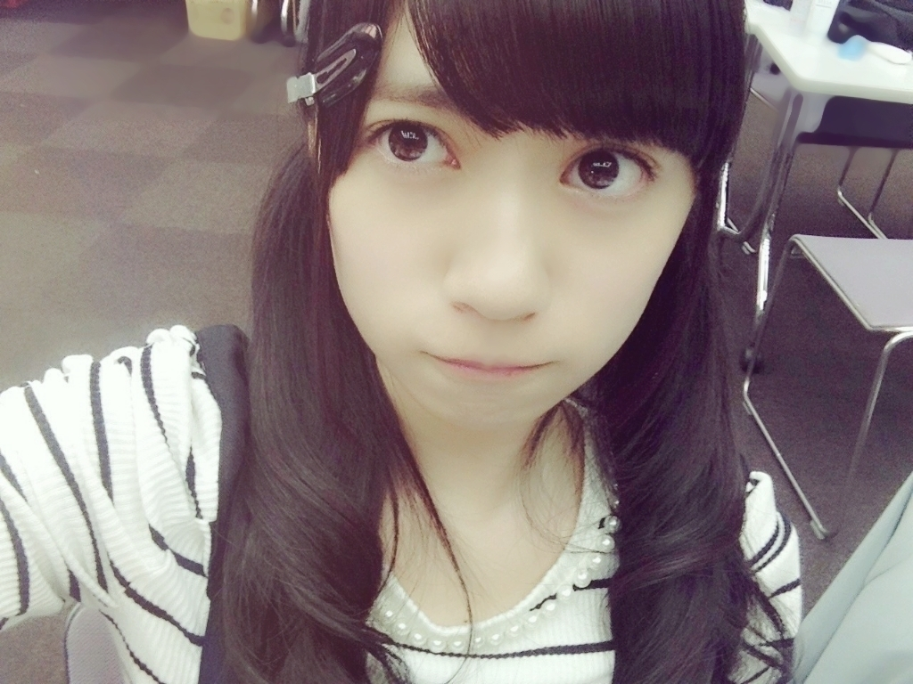
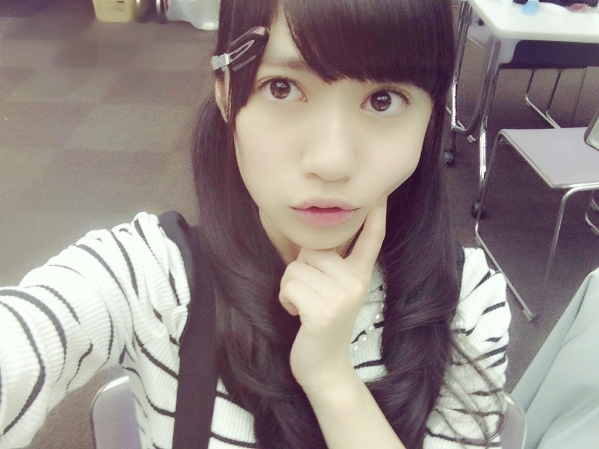

2015/0525Mon予言魚が可愛いです♬寺田蘭 世
早朝に聴きたくなる歌は
Michael Jackson
Love Never Felt So Good
皆さんの早朝に聴きたくなる
歌は何ですか？
おはようございます
こんにちは
こんばんは
寺田蘭世です
宜しくお願い致します♬
個別握手会横浜○
ありがとうございました
髪型はハーフツインテールでした
久しぶりのハーフツインテール

お洋服は
れなちのお下がり
れなちがきっと幼き頃着ていた
お洋服
物持ちのいいと噂のれなち。
お下がりありがとう
とても、楽しい時間でした
握手してる瞬間
皆さんが笑顔になって下さると
握手会っていいなーって
改めて思えます♬
そして、４部終わりに
かりんちゃんの
生誕祭へお邪魔しました。
かりんちゃんが好きそうな
ポップなカラーの物が沢山あって
かりんちゃん良かったねって
後ろから見てました、、、笑
皆で上り坂ポーズでの撮影
上り坂ポーズは右手だよって
生誕委員の方々の声が聞こえて
周りもあたたかい笑いが
聞こえてきて
ほっこりしました(´｡･v･｡｀)
お誕生日おめでとう
良い１年をお過ごし下さい。
NOGIBINGO!4○
乃木坂に応援されたーい
瓶底メガネをかけての登場
実はあの日が初登場でした♬

瓶底メガネ初体験で
ちょっぴり恥ずかしかったです
瓶底メガネとは目が小さく見える
メガネさんの事です。
そして、絢音ちゃんのDJ
ひな壇にも
沢山2期生が座ってましたよ
可愛いメンバーに応援される回
とても素晴らしかったです
自分も癒やされました
皆さんも元気もらえましたよね！？
乃木のの○
乃木のの
聴いてくれましたか( ..)``？
富士急での公開収録で
初乃木ののさんでした
でも、スタジオ？！での
乃木ののは初めてで
始まる前は緊張しましたが
みなみさんまりかさんと
お話してるうちに
凄く自然に楽しく出来ました♬
そして、ぷく顔選抜の回で
ぷく顔の話を乃木のので話題になっていたのは知っていたのですが
まさか自分がぷく顔選抜に入れて
その上なんと
な、ななんと
十ぷく人（十福神）に入れて
凄く嬉しかったです
ぷく顔はさり気なく初期の頃から
やっていて
右の頬を膨らますのが
昔からの癖なんです。
自撮りでも
１人で笑ったりするのが
恥ずかしくて照れ隠しにぷく顔を
良くしちゃうんです、、、( ..)``
初ラジオは
いい経験になりました
楽しかったです
また、乃木ののに参加したいです♬
そして、ＭＣって凄いなーって
私もみなみさんみたいに
上手くできるかな( ..)``
かりんちゃんも凄くお喋り上手だし
なんかＭＣとか仕切るって
カッコイイ♬

若干、ぷく顔

コメント返し○
○いつも海外から応援しています！
一人で留学していて、
挫けそうなときに
らんぜのブログが更新されたりして
嬉しくてがんばれます！
テストのときに
緊張してしまうので、
今度はテスト前ガム噛んで
集中します！
→海外から
このブログも読んでるかな？
いつもありがとうございます
テスト頑張ってください( ..)``
○真夏のツアー千秋楽いくから！
全力で応援します！
うちわ作ろうか悩んでる、、、
作ったら
よろこんでくれるかな？(ｰ ｰ;)
→コメントありがとうございます
真夏のツアー
一緒に楽しみましょうね！
うちわ
面倒でなければ
ぜひ、作って頂きたいです♬
自分の推しタオルとか
うちわとか
見つけたらライブ中嬉しいですし
それに支えられてます( ..)``
○寺田 蘭世 さ ー ン
蘭世のぷく顔、たまらんぜ
質問→うたプリの好きなメンバー
は？？
最近思う事、
蘭世の勢いとまらんぜー
→はい！
寺田蘭世です
ぷく顔ありがとうございます
お陰様で乃木のの、のぷく顔選抜に
入ることが出来ましたよ
うたプリで好きなメンバー
一十木音也くん
QUARTET★NIGHTの
４人も好きで
特に美風藍ちゃん
寿嶺二さん
もう、名前見ただけなのに
幸せーな気持ちになるくらい
好きです、、、( ..)``
QUARTET★NIGHTはゲームを
やりだしてから好きになりました
藍ちゃんがロボ...の下りは
何だか凄く
何でしょうこみ上げてきて
泣きました、、、(､ﾝ､)笑
映画とかゲームの世界にも
凄く感情移入し過ぎて
昔からなんですが
泣いたり怒ったり
アクション系とかSF系とかの
映画を観ていると
もう、心臓が足りないんじゃないか
くらいの勢いで
ドキドキしちゃって
もう、見れたものじゃありませんよ、、、笑
お話し若干それましたが
うたプリ大好きで
感情移入し過ぎるのがちょっぴり
悩みな寺田蘭世でした
こんな私ですがこれからも
よろしくお願い致します！
○おはようございます
こんにちは
こんばんは。
蘭世ちゃんの
ブログの書き出しを真似てみました。あつかましいですね、ごめんなさい
→おはようございます
こんにちは
こんばんは
あつかましいなんてそんな！
嬉しいですよ
ありがとうございます( ..)``
私のコメント欄が
おはようございます
こんにちは
こんばんはでいっぱいに
なるのも面白そうだなーっと
今思いつきました
どうでしょうか？！
告知○
NOGI CAMERA Vol.43
UTB+
６月９日発売
NOGIBINGO!4
（NOGIROOM）
ボーダー組での登場です
フタバ図書さんのホームページに
ボーダー組での
アンケートが載ってます
私以外の５人はもうすでに
載ってます♬
ラストが私だそうです
フタバ図書さんのホームページ
詳しく乃木坂の事を書いて下さってる上に私達の情報も最新で嬉しいです
本当に
ありがとうございます
良かったらチェックして下さい
あの、こちらからアクセスしてねっていっぱい英語が書いてある奴の
やり方がよくわからないもので、、
申し訳ありません( ..)``
宜しくお願い致します♬
最後まで読んで下さり
ありがとうございました
では、またきっと( ..)``
2015/05/25 17:00


コメント(546)
ぷるてんてん
ﾍ（＾ω＾ﾍ）
とまらんぜー！
おこらんぜー！！
乃木のの面白かった！
ぷく神おめでとう
選抜に早くなってほしいな
プク顔選抜十ぷく神おめでとうd(^_^o)
モバメたくさん送ったとき、まだおれモバメとってなかったから、また、モバメたくさん送って欲しいなーw
昨日楽しかったです。またいきます！
昨日楽しかったです。またいきます！
どうもなおおです！
ブログの更新ありがとうね！
また後でコメントするねー
おはようございます
こんにちは
こんばんは
プク神入りおめでとう！！！！！
これからの活動も頑張ってくださいねw！
モバメで言われて予言魚見たけど若干苦手かもしれない(´･_･`)
よくよく見ると可愛いのかなーw
毎日見てみますw
じゃあまた(､ﾝ､)
全ツにらんぜ用のうちわ持ってくね！！
頑張って作ったから見つけてね？
推しタオルもバンバン上げます！
サイリウムもね！
この気持ちどうすれば良い？？
プク顏選抜おめでとうございます
(プク顏選抜関係ないですが)12thシングルのアンダー楽曲に蘭世入ってると思うと今から楽しみです
まだ詳しく発表できないと思いますがどんな感じの曲になってるか教えてください
今回も絶好調に可愛い♡♡
ラジオ聴けてないんだ(´･_･`)
ごめんよ〜
ぷく顏可愛いよ♡
私は朝聴きたくなるのは「私、起きる。」かな〜
でも毎朝ボーダー聴いて学校いってるよ( ⁼̴̀꒳⁼̴́ )
ハーフツイン確かに久々だね！
生写真撮影とかでも最近やってなかったよね？
蘭世はなんの髪型も似合うからなぁ(´・ε・｀)
羨ましい(´・ε・｀)笑笑
のぎのの！聴いたよ！！
10プク神おめでと〜♡
蘭世でるってきいてこれはきくしかない！と思って聴きました✧*｡(ˊᗜˋ*)✧*｡
蘭世よく声かわいいねとかいわれないのー？
こんにちは
こんばんは
今は夕方だよ〜。
らんぜのモバメ取ったらメールの通知がいっぱいでなんか人気者になった気分だよ〜！
ぷく顔選抜入りおめでとう！マジであのフォーメーションめちゃいい！
ぜひ「ぷく顔46」やって欲しい！(*^o^*)
蘭世ちゃ～ん、握手会お疲れ様。
髪型もお洋服も似合ってますよ。
瓶底メガネいいじゃん
十ぷく人に入れて良かったね（笑）
蘭世ちゃんも元気に頑張るんだぞ
NOGIBINGO4みたよー！
最初はだれかなーっ思ったけど
そのあとすぐわかったよ笑
ひな壇にずっといたね！
映る度にニヤニヤしてました笑
かりん↑の生誕見たかったなぁー！
ハーフツインっていうかツイン系似合うよね笑
むしろツイン系のイメージしかない笑
乃木ののまだ聞けてないんだー
ごめんねー
でも蘭世が十ぷく神に入ったのは聞いたよ！
おめでとう！
ほんとはセンターでもよかったなー
なんて笑
またコメントするねー！
昨日の握手会お疲れ様でした。僕は、めっちゃ行きたかったです。
３枚目の写メのらんぜちゃん、めっちゃかわいいです。
らんぜちゃん、体調に気をつけて仕事頑張ってね。
またコメントするね。
らんぜの勢いとまらんぜ！。
握手会おつかれさま！！このお洋服も似合ってて可愛いよ！+.(*ﾟｪﾟ*)ﾟ+.+.(*ﾟｪﾟ*)ﾟ+.
てか、らんぜがマイケル・ジャクソン聞くの意外でびっくり！笑笑
その曲聞いてみようかな！
ビンゴ見たよ！
漫画に出てきそうな感じだったね！笑
あの回は他にも２期生がたくさん出ててうれしかったな！あやねちゃんはDJやってたしね笑笑
らんぜはDJやらないの？あ、握手会ではやってくれたり？笑
のぎののお疲れ様！！まだ聞けてないんだよねー
とりあえずぷく神おめでとう！！！絶対入るとは思ってたけどうれしいね！（●＾o＾●）
NOGICAMERA買ったよ！！大切に保管してます(*´艸`*)
もう少しで6月だね〜早いね！笑
そしてすぐ夏！！！乃木坂の夏がはじまる！！！
これからも活躍楽しみにしてるよ！
らんぜの勢いとまらんぜ！！！ヽ(*´∀｀*)ノ
昨日のかりんちゃんの生誕祭のときに蘭世見つけて嬉しかったよ！
蘭世の握手券取れてなかったから、嬉しさ倍増！！
７日は行くからよろしくね！
そう言えば、蘭世は誕生日にもらって嬉しいものは何？
こんばんは！
いつもブログ更新楽しく拝見しております。
昨日はパシフィコでの個握お疲れ様でした。
外は気温も上がっていたみたいですが会場内
は多少寒かったとの情報も！体調くずされて
ませんか？
NOGIBING4 しっかり見てましたよ！冒頭で
らんぜ出てたし二期生さんもしっかり映って
ましたね。でも、あーちゃんって“３”は出て
なかったのですね。気が付きませんでした。
この“４”は二期生さんがよくでるので嬉しい
です。次回は“ボーダー組”でRoom 出るの？
しっかりチェックしておきます。
では次回のブログ更新楽しみに待ってます。
（お約束の）らんぜの勢いとまらんぜ！
みやちゃん
らんぜぇぇぇぇぇ！
iPhoneのホーム画面、ロック画面、キーボード全部に蘭世が居ていつも幸せだ(*ﾟ▽ﾟ)ﾉ
握手会してる時ニヤニヤがとまらんぜ！
このニヤニヤは蘭世だから引き出せる物なんだなと思ってるよ
アニメはあんまり見ないけどこの機会にいろんなアニメを見てるようかな？とか思ったり…www
アニメを語る蘭世がすごくキラキラしてるからね！
じゃあ俺は蘭世を語ってるときキラキラしてるようにしよ！w
プク顔選抜10プク神おめでとう！蘭世のプク顔今度見せてもらお！
ほんとにいつもありがとう！
蘭世が元気だとすごい力を貰えます！
蘭世が今の僕の力の源です ν(＞ｪ＜)bｲｪｲ!!
これからも頑張ってね ｸﾞｯ!(•̀ᴗ•́)و ̑̑
蘭世の勢い！とまらんぜぇぇぇぇぇ！
ブログandモバメありがと♫
地震の心配まで！
蘭世はなんていい娘なんだー！！と、感動！
そんな、やまは、風邪をひいて咳が止まらんぜ！
こんにちは
こんばんは
蘭世ちゃん♡
乃木のの聞いたよー！3人ともかわいかった！ぷく顔選抜十ぷく人おめでとう＼(^o^)／
最近ね、ボーダーずっと聞いてます！良かったら、パート分けとか教えてもらえたら…！♡あ、これ、質問なので、答えてね(笑)
のぎるーむのボーダー組のリラックスした姿を見れるの楽しみにしています！
うたプリが大好きなので、らんぜちゃんも好きだと知って、なんだかとてもうれしいです…！笑
私は藍くんとレンくんが好き♡
いつか握手会でお話したいなあ〜꒰*´∀`*꒱
更新ありがとう、ひろやです。
握手会お疲れ様でした、行けなくてごめんね。
NOGIBINGO見ました、乃木のの聴きました。瓶底メガネ可愛いすぎです♡ぷく顏十福神おめでとう~ぷく顏といえば蘭世ちゃんだもんね♡俺が早朝に聴きたくなる歌はケツメイシさんの朝日って歌かな、よかったら聴いてみてください。予言魚はドラゴンボールですね（笑）ジャンプ系の漫画も読むのですか？
では✋またコメントします。
蘭世〜！きのうは握手会ありがとう！
久しぶりだったから
やはり覚えてなかったよね｡ﾟ(ﾟ ^o^ ﾟ)ﾟ｡
これから蘭世のとこ
たくさん遊びにいきたいから
また握手たのしみにしてるね♡♡
_
ブログもモバメもありがとう〜！
後で昨日の事とかコメントで書くね！
とりあえず、ありがとうって言おうと思ってw
では、またコメントします
握手会おつかれー！
私服かわいいね！
NOGIBINGOの最初に出てきたらんぜとってもよかったよ！
乃木ののよかったよ！
そして、ぷく顔選抜&十ぷく人入りおめでとう！
らんぜのぷく顔大好きだよー！
かわいいらんぜが大好きです！
ではではー
ツインテールの蘭世超可愛い！
毎度、ショウでございます( ^o^)ノ
レポ待ってた～
昨日の個握はマジ楽しかったよ!(^^)!
蘭世にツインテールは反則級の可愛さだぜ！
俺もかっこいいヘアスタイルを極めないとな
早くもまた蘭世に会いたい
認知ゲットのために通い続けるぜ(゜ω゜)
じゃ、また
10ぷく神おめでとー( ´ ▽ ` )ﾉ これからもモバメ
とかでよろしくねー笑 この前12thの当落が出たんやけど、なんと蘭世全部落ちてしまった(ｰｰ;)
蘭世の勢い止まらんぜ！で嬉しいけど横浜で会えないの残念(^^) 代わりに京都は当たったからまた話そー( ´ ▽ ` )ﾉ
昨日はお疲れ様！
握手楽しかったよ！
全ツも当選したし、らんぜに会える機会がどんどん増えて嬉しいー(★‿★)
また、次の握手会もいきます！
しまたけ
こんばんわ！
乃木のの、
横浜で握手会
お疲れ様でした〜
乃木坂のふくがお選抜おめでとうううう
やった！
橋本さんがセンタになりますた！
イエイ
らんぜのブログを更新してくれてありがとう
めちゃかわいいじゃん！
これからもよろしくね～！
こんにちは
こんばんは
昨日は握手会お疲れ様！
蘭世の握手券昨日の売り切れだったから行けなかったけどかかりんの生誕祭と隣のろってぃレーン並ぶときに蘭世みたよ（笑）
れなちのお下がり似合っててめっちゃ可愛かったよ( ૢ⁼̴̤̆ ꇴ ⁼̴̤̆ ૢ)~ෆ
6/7は横浜全握ぶり２回目の握手しに行くからね（笑）
ぷく顔選抜10ぷく神ヽ(〃･ω･)ﾉ☆ﾟ’･:*☆ｵﾒﾃﾞﾄ♪
いつか蘭世もみなみみたいMCやったりする日来るかな？
楽しみに待ってます（笑）
nogibingoの瓶底メガネも可愛かったよ( ૢ⁼̴̤̆ ꇴ ⁼̴̤̆ ૢ)~ෆ
今度握手会でもつけてみれば（笑）
今日のNogiroomもUTB＋も楽しみすごく(*ﾟ▽ﾟ)ﾉ
ふたば書店のやつもチェックするね！
楽しかったよ！
朝聴きたくなる曲はねowl cityさんのGood Timeがテンションあがって好きです！
良かったら聴いて見て下さい！
次6月7日握手行くんでよろしくね！
ばいせこー(r_z)
ぷく顔10ぷく神おめでとう٩(๑❛ᴗ❛๑)۶
個人的には1列目かな〜って思ってたよ（笑）
昨日の握手会も凄く並んでいて蘭世の人気とまらんぜ〜って感じになってきたね(o^^o)
モバメの写メも可愛いやつばかりでこの前のぷく顔写真連続にニヤニヤしてました٩(๑❛ᴗ❛๑)۶
質問
蘭世の中でぷく顔選抜センターは誰だと思う？
また握手会でしてもらいたい事ある？
こんにちは
こんばんは
↑これいっぱいになるといいね！
いつもブログのコメの初め「ひらつかなのです(*￣∇￣)ノ」にしてるのに違うのにしたの久しぶりだよ笑笑
半年振りくらいかな？笑
日奈子とか怜奈に聞けば分かると思うよ～
個人的なお決まりのでそれからコメ始めさせてもらいます！
ひらつかなのです(*￣∇￣)ノ
予言魚って七つのボールを集める国民的大人気アニメのあれですよね？？？
神と神に出てきたあれですよね？？？
確かにあれは可愛いよね！
映画の大画面にあの魚来たときほのぼのしました(*´ω｀*)
朝聴きたくなる曲か～
私、起きるかな笑笑
まぁちゃんと考えるならテンションあげたいから「じょいふる」かな～
いきものがかり好きなんだ
蘭世ちゃん可愛すぎ！！！
最初の写真ズルイよ～
髪型と服装が合ってる！
めちゃくちゃ可愛い((o(^∇^)o))
怜奈がこんなに可愛らしい服を持ってたとは物凄い驚いてます笑
幼き頃ってどのくらいなの？
怜奈が中学生くらいの服？
もしかして、、、しょうがry……………
いや、無いか笑
ノギビン4良かったよ～
このメガネ似合うって蘭世すごすぎ！
なかなか似合う人いないよ
やっぱり可愛い子はなんでも似合うんですね！
絢音ちゃん頑張ってたよね笑笑
緊張し過ぎてヤバかったけど笑
10ぷくに蘭世入ると思ってたからやっぱりか！って感じでした
だって蘭世のぷく顔めっちゃ可愛いもん
蘭世のぷく顔はちょうどいいんだよね
膨らみ過ぎず、足りなくもない
最高のぷく顔だよ！！！
双葉図書の見るね！
ではお仕事頑張ってね（~▽~＠）♪♪♪
祐太/昼下がりの平塚
握手会お疲れ様〜\(´ω` )/
1〜3部行けてめっちゃ楽しかったよ（≧∇≦）
声ほとんど治っててほんとよかった(´•̥ ω •̥` )
ラプンチェルめっちゃよかったし♪
また6/7に行くんでもふもふしよーねー(∩^ω^∩)
コメントする